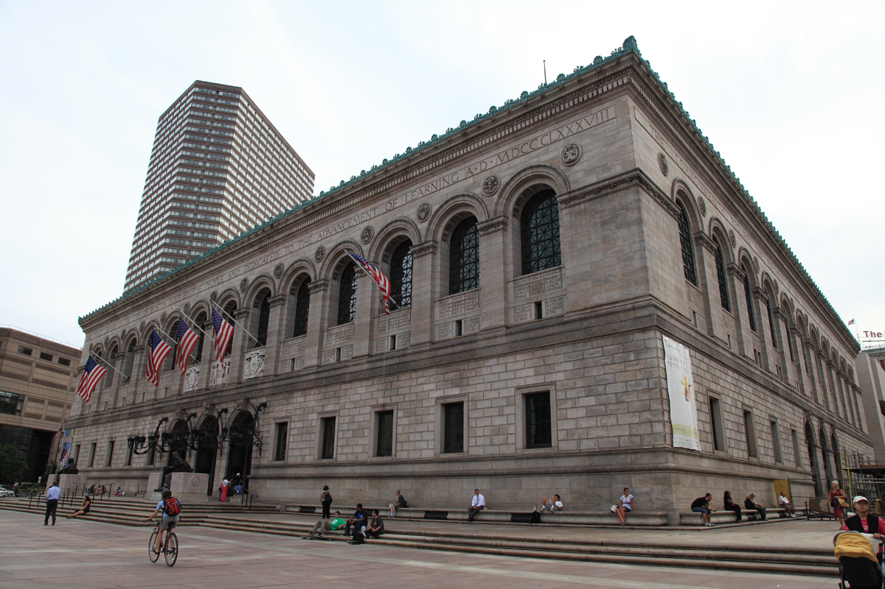
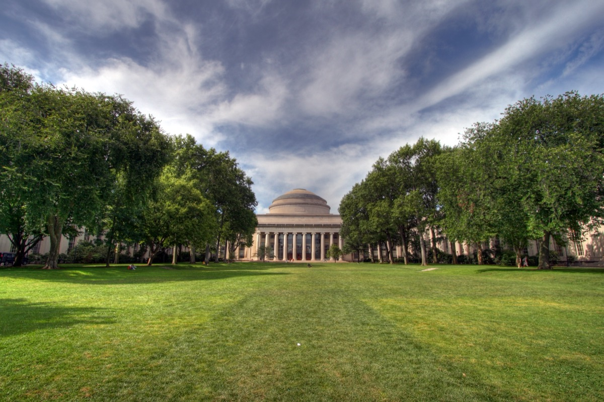

Friday night is North End dinner and the harbor. Saturday is the Freedom Trail, Back Bay, Beacon Hill and an Esplanade sunset. Sunday is brunch, Cambridge or the Seaport, then the train. Got a third day? Use the 3-day itinerary.
01 · Friday
Friday evening: North End dinner and the Harborwalk
Drop your bags, eat well, end on the water. Landing late? Keep the dinner, skip the walk.
| Time | Activity | Location | Cost |
|---|---|---|---|
| 6:00pm | Arrive, drop bags at the hotel | South Station, Back Bay Station or Logan | Transit $2.40, or free Silver Line from Logan |
| 7:00pm | Walk Hanover Street end to end to see the options and the line lengths | Hanover St, North End | Free |
| 7:30pm | Dinner: Giacomo's if you will wait, Neptune Oyster for seafood, Mamma Maria for a table you booked | 355 Hanover St · 63 Salem St · 3 North Sq | $30–80 per person |
| 9:00pm | Cannoli from Modern or Mike's, eaten on the Prado | 257 and 300 Hanover St | $5–8 |
| 9:30pm | Harborwalk: Christopher Columbus Park, Long Wharf, the Aquarium, Rowes Wharf arch | Waterfront | Free |
| 10:30pm | Nightcap at the Bell in Hand or a rooftop bar, or home to bed | 45 Union St | $10–18 |
Dinner in the North End
Giacomo's, 355 Hanover StT Haymarket (Orange, Green)$30–80pp
Giacomo's is cash-only with a line worth standing in; Neptune Oyster seats couples fast; Mamma Maria is the one to book a week ahead.
The Harborwalk after dark
Christopher Columbus Park to Rowes WharfT Aquarium (Blue)Free
Cross Atlantic Avenue to the lit rose trellis, then follow the water past Long Wharf to the Rowes Wharf arch. About a mile round trip.
02 · Saturday
Saturday: Freedom Trail, Back Bay, Beacon Hill, Esplanade sunset, night out
About seven miles on foot with one T ride. Start at 9am; the trail is calm until 10:30.
| Time | Activity | Location | Cost |
|---|---|---|---|
| 8:30am | Coffee and a pastry near the Common | Tatte, 70 Charles St, or Thinking Cup, 165 Tremont St | $6–10 |
| 9:00am | Freedom Trail: State House, Granary Burying Ground, King's Chapel, Old South, Old State House | Beacon Hill and Downtown | Free outside; sites about $15 combined |
| 10:45am | Faneuil Hall and a look through Quincy Market | 4 S Market St | Free |
| 11:15am | Paul Revere House and the Old North Church | 19 North Sq · 193 Salem St | About $6 and $10 |
| 12:15pm | Lunch: a slice at Regina or arancini at Galleria Umberto | 11½ Thacher St · 289 Hanover St | $8–20 |
| 1:00pm | Green Line from Haymarket to Arlington; the Public Garden and the Swan Boats | Public Garden, 4 Charles St | $2.40; Swan Boats about $4.50 in season |
| 1:45pm | Newbury Street west to Exeter, then the Boston Public Library and Copley Square | 700 Boylston St | Free |
| 3:30pm | Walk back through the Garden to Beacon Hill: Charles St, Acorn St, Louisburg Square | Beacon Hill | Free |
| 5:00pm | Rest, or a drink on Charles Street | The Sevens, 77 Charles St | $8–12 |
| Sunset | Cross the Arthur Fiedler footbridge to the Esplanade; the Hatch Shell dock faces west | Charles River Esplanade | Free |
| 8:00pm | Dinner in the South End or Back Bay | Tremont St or Boylston St | $40–90 |
| 10:00pm | Night out: rooftop bar, jazz at Wally's, a comedy show, or the last innings at Fenway | See below | $15–60 |
The Freedom Trail, Common to Old North Church
Starts at 139 Tremont StT Park Street (Red, Green)~2 mi, 2.5 hrs

Follow the red brick line through the first eleven sites and leave Charlestown for another trip. Go inside the Granary Burying Ground, the Old State House and the Old North Church.
The Public Garden, Newbury Street and the Boston Public Library
4 Charles St / 700 Boylston StT Arlington / Copley (Green)Free; Swan Boats ~$4.50

Swan Boats and the Ducklings statues, then eight blocks of Newbury Street, then Bates Hall and the courtyard at the library.
Beacon Hill
Acorn St, Louisburg Square, Charles StT Charles/MGH (Red)Free

Brick sidewalks, gas lamps and Federal townhouses. Acorn Street is the photo, Louisburg Square the grand address.
Sunset on the Esplanade
Hatch Memorial ShellT Charles/MGH (Red)Free

Cross the Arthur Fiedler footbridge from Charles Street and walk west to the dock, which faces straight up the river.
Saturday night out
Lookout Rooftop, 70 Sleeper StT Courthouse (Silver)Cocktails $15–18
Lookout has the skyline, the Beehive has live music, Wally's is jazz since 1947, Laugh Boston books touring comics. Red Sox home? Fenway beats all of it.
03 · Sunday
Sunday: brunch, Cambridge or the Seaport, SoWa and the train home
Pick Cambridge for the classic, the Seaport if it rains or your train leaves from South Station.
| Time | Activity | Location | Cost |
|---|---|---|---|
| 9:30am | Check out, leave bags with the hotel | Your hotel | Free |
| 10:00am | Brunch | The Friendly Toast, 35 Stanhope St, or Mike & Patty's, 12 Church St | $15–30 |
| 11:15am | Option A: Red Line to Harvard; Harvard Yard and the Harvard Art Museums | 32 Quincy St, Cambridge | $2.40; museums free |
| 12:45pm | Option A: Red Line to Kendall; MIT campus and the Longfellow Bridge walk back | 77 Massachusetts Ave, Cambridge | Free |
| 11:15am | Option B: Red Line or walk to the Seaport; the ICA and the Harbor Shore Drive waterfront | 25 Harbor Shore Dr | About $20 |
| 12:45pm | Option B: Fort Point: oysters at Row 34, or Flour for lunch | 383 Congress St · 12 Farnsworth St | $15–40 |
| 2:00pm | SoWa Open Market (May–October, Sundays 10–4): food trucks, vendors, the vintage market | 460 Harrison Ave, South End | Free entry |
| 3:30pm | Collect bags; walk or Orange Line to Back Bay Station, or Red Line to South Station | $2.40 | |
| 4:30pm | Train or flight home | South Station · Back Bay · Logan |
Brunch
The Friendly Toast, 35 Stanhope StT Back Bay (Orange)$15–30
Friendly Toast is big and reliable, Mike & Patty's is a tiny counter with the city's best breakfast sandwich. Go before 10am or after 1pm.
Harvard Square and MIT
32 Quincy St / 77 Massachusetts AveT Harvard / Kendall (Red)Free, museums Sun 10–5

Harvard Yard through Johnston Gate, then the free Art Museums, then Kendall for the Stata Center and a skyline view. Walk the Longfellow Bridge back.
The Seaport and the ICA
25 Harbor Shore DrT Courthouse (Silver)~$20, Sun 10–5

Ten minutes from South Station. The fourth-floor glass gallery over the harbor is the point; then Fort Point for oysters at Row 34.
SoWa Open Market
460 Harrison Ave, South EndT Tufts Medical Center (Orange)Sun 10–4, May–Oct
About 150 makers, a farmers' market, food trucks and a covered vintage market, fifteen minutes from Back Bay Station.
04
Seasonal versions: foliage, winter, Marathon and summer weekends
- Fall (late September to late October): swap Sunday for the free Arnold Arboretum or Mount Auburn Cemetery. Head of the Charles is the third weekend of October; book early.
- Winter (December to February): start the trail at 10am, skate the Frog Pond, walk Beacon Hill at 4pm when the gas lamps come on, and swap Fenway for the Bruins or Celtics at TD Garden. SoWa is closed; do the MFA or Gardner.
- Marathon weekend (third Monday in April): hotels double and sell out months ahead. The expo runs Friday to Sunday at the Hynes, the B.A.A. 5K is Saturday, and Monday the Red Sox play at 11am.
- Summer (June to August): ferry to Spectacle Island from Long Wharf on Sunday morning instead of Cambridge, free Hatch Shell concerts, Sullivan's at Castle Island, the Lawn on D.
05 · Where to stay
Where to stay for a weekend in Boston
Downtown puts Friday dinner on foot. Back Bay is best for Saturday afternoon and Sunday brunch.
Downtown and the waterfront
The Bostonian, 26 North StT Haymarket (Orange)$230–700/night
The Bostonian is three minutes from Hanover Street, the Parker House is on the trail, the Harbor Hotel is the splurge.
Back Bay
The Lenox, 61 Exeter StT Copley / Arlington (Green)$250–800/night
Ten minutes to the North End on the Green Line, and Back Bay Station is the Amtrak stop. The Lenox is the classic.
Budget and Cambridge
HI Boston, 19 Stuart StT Boylston (Green)Dorms ~$50–90
HI Boston is a clean hostel by the Common. Cambridge hotels near Kendall are often cheaper on weekends, two Red Line stops from Downtown.
06
How much a weekend in Boston costs
Per person for two nights, excluding travel to the city. Rooms are the big variable.
| Line | Budget | Mid-range | High-end |
|---|---|---|---|
| Two nights (per person, sharing) | $100–180 hostel | $300–500 (half of a $300–500 room) | $700+ (half of a $700+ room) |
| Food and drink | $90–130: slices, counters, one North End dinner | $220–320: three dinners out, brunch, drinks | $450+: oysters, tasting menus, cocktails |
| Transit | $15–22 | $22 (7-day pass) | $22–80 (some taxis) |
| Attractions and nightlife | $15–30: Old North Church, one show | $60–120: ICA or a museum, Swan Boats, a rooftop bar, a show | $200–350: Red Sox tickets, museum, harbor cruise, two nights out |
| Weekend total | About $250–350 | About $700–1,000 | About $1,500+ |
The trail, the Garden, the library, Beacon Hill, the Esplanade, Harvard and SoWa are all free. See free things to do in Boston.
07
Getting there, getting around and booking
- From New York, Amtrak Acela takes about 3h40 to South Station or Back Bay Station; the Northeast Regional is an hour slower and much cheaper.
- From Logan, the Silver Line SL1 to South Station is free; the Blue Line serves Downtown. Taxis run $25 to $40.
- T fares are $2.40 by CharlieCard or contactless card; a 7-day pass is $22.50. Trains run until about 12:30am.
- Book ahead: the hotel, a Friday North End reservation and Red Sox tickets. Eat at 6pm or after 9pm to halve North End waits.
- Best weekends: late September to October and late May to June. Avoid the weekend after Labor Day, Marathon weekend and Head of the Charles unless you booked early.
FAQ
A weekend in Boston: common questions
Is a weekend enough time to see Boston?
Yes, if you arrive Friday evening. Two and a half days covers the Freedom Trail, North End, Back Bay, Beacon Hill, the Esplanade, Cambridge or a museum, and three good dinners.
What is the best weekend to visit Boston?
Late September through mid-October: best weather, Head of the Charles and early foliage. Late May and June are the warm alternative. Avoid college move-in at the start of September.
Where should I stay for a weekend in Boston?
Back Bay or Downtown. Both put Saturday on foot and are one short T ride from the North End and Cambridge. Downtown weekend rates are often lower than weekdays.
How much does a weekend in Boston cost?
Excluding travel, roughly $250 to $350 per person on a hostel budget, $700 to $1,000 mid-range, and $1,500 or more high-end. A 7-day T pass is $22.50.
What should I do in Boston on a Sunday?
Brunch, then Harvard and MIT or the Seaport and the ICA. From May to October, the SoWa Open Market in the South End runs Sundays 10am to 4pm.